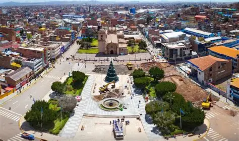
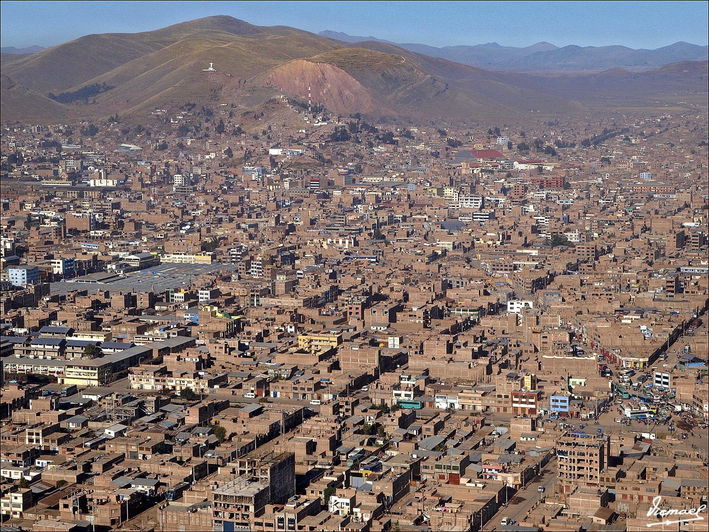
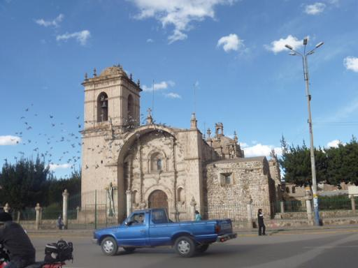
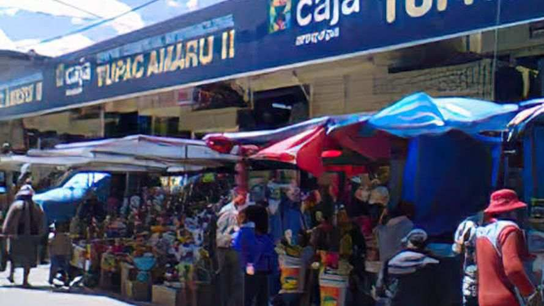

Plaza de Armas

La Plaza de Armas constituye uno de los espacios públicos representativos de la ciudad y es un punto de encuentro para habitantes y visitantes.
Historia, cultura, tradición y lugares representativos de la Ciudad de los Vientos

Juliaca es una de las ciudades más importantes del departamento de Puno. Se caracteriza por su actividad comercial, su diversidad cultural y la energía de sus habitantes.
La ciudad se encuentra ubicada en el altiplano peruano, a una altitud aproximada de 3 824 metros sobre el nivel del mar.
Juliaca posee una historia vinculada al desarrollo de los pueblos del altiplano y posteriormente al crecimiento del comercio y del transporte ferroviario.
Con el paso de los años, la ciudad se convirtió en un importante centro comercial y de servicios de la región Puno.

La Plaza de Armas constituye uno de los espacios públicos representativos de la ciudad y es un punto de encuentro para habitantes y visitantes.

La iglesia de Santa Catalina es uno de los elementos arquitectónicos y religiosos más conocidos de Juliaca.

El comercio constituye una de las principales actividades económicas de la ciudad y atrae diariamente a comerciantes y compradores de diferentes lugares.
Juliaca posee una importante tradición cultural expresada en sus fiestas, música, danzas y gastronomía.
Para conocer más información turística del departamento puede visitar el portal oficial de PROMPERÚ – Perú Travel .
Una alternativa para conocer algunos lugares representativos de Juliaca puede organizarse de la siguiente manera:
| Hora | Actividad | Lugar | Duración |
|---|---|---|---|
| 08:00 | Desayuno tradicional | Centro de Juliaca | 1 hora |
| 09:00 | Visita cultural | Iglesia Santa Catalina | 1 hora |
| 10:30 | Recorrido turístico | Plaza de Armas | 1 hora |
| 12:00 | Almuerzo | Centro de la ciudad | 1 hora |
| 14:00 | Recorrido comercial | Zona comercial | 2 horas |
Completa el siguiente formulario para compartir tu opinión.